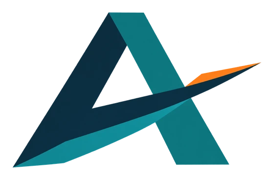

AREION FC A1
Flight data
Recorded session0:00
Welcome

AREIONFlight ConsoleFlight controller
Offline- Telemetry link
- —
- Firmware
- —
- Setup
- —
- Configured input
- —
Session activity
- No events this session
Session recordings
Open an Areion telemetry CSV to replay a saved flight, or export the packets received from the kit.
No telemetry recorded.